pyzag
pyzag is a library for efficiently training generic models defined with a recursive nonlinear function.
Installing
pyzag is a pure python package and can be installed simply with pip install pyzag.
Nonlinear recursive functions
A nonlinear recursive function has the form
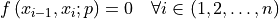
with  the model state (the unknowns to solve for) and
the model state (the unknowns to solve for) and  the model parameters. Given the model and an initial condition 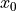 we can obtain a sequence 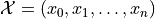 by recursively solving the nonlinear equation for 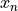.
the model parameters. Given the model and an initial condition 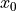 we can obtain a sequence 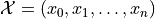 by recursively solving the nonlinear equation for 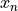.
While this form seems abstract, it actually practically describes a large number of interesting and useful models. For example, consider the ordinary differential equation defined by
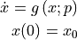
We can convert this into a nonlinear recursive equation by applying a numerical time integration scheme, for example the backward Euler method:
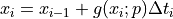
This algebraic equation has our standard form for a nonlinear recursive model:
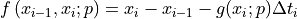
However, defining our time series with an algebraic equation, rather than a differential equation, provides access to a range of models that cannot be expressed as ODEs, for example difference equations.
Training building blocks
The goal of training is basically to find the parameters for a nonlinear recursive function  and initial condition such that the resulting sequence
and initial condition such that the resulting sequence  best matches a target series 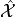. At a minimum to train a model we need to efficiently generate the time series for different parameter values and, often, for multiple targets. Additionally, we often need the derivative of the sequence with respect to the model parameters .
best matches a target series 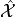. At a minimum to train a model we need to efficiently generate the time series for different parameter values and, often, for multiple targets. Additionally, we often need the derivative of the sequence with respect to the model parameters .
pyzag provides a few building block methods for efficiently generating sequences and their derivatives:
pyzag can vectorize the simulation for the sequences both for independent instantiations of the same model (i.e. batch vectorization) and also by vectorizing over some number of steps
 . This paper describes the basic idea, but pyzag extends the approach to general nonlinear recursive models. The advantage of the general method is that it can increase the calculation bandwith if batch parallelism alone is not enough to fully utilize the compute device.
. This paper describes the basic idea, but pyzag extends the approach to general nonlinear recursive models. The advantage of the general method is that it can increase the calculation bandwith if batch parallelism alone is not enough to fully utilize the compute device.pyzag implements the parameter gradient calculation with the adjoint method. For long sequences this approach is much more memory efficient compared to automatic differentiation and is also generally more computationally efficient.
pyzag also provides several methods for solving the resulting batched, time-chunked nonlinear and linear equations and predictors for starting the nonlinear solves based on previously simulated pieces of the sequence.
Determinstic and stochastic models
pyzag is built on top of PyTorch, integrating the adjoint calculation into PyTorch AD. Users can seemlessly define and train deterministic models using PyTorch primitives.
The library also provides helper classes to convert a deterministic model, defined as a nonlinear recursive relation implemented with a PyTorch model (torch.nn.Module), into a statistical model using the pyro library. Specifically, pyzag provides methods for automatically converting the deterministic model to a stochastic model by replacing determinsitc parameters with prior distributions as well as methods for converting models into a hierarchical statistical format to provide dependence across multiple sequences.
Learn more
Additional topics: